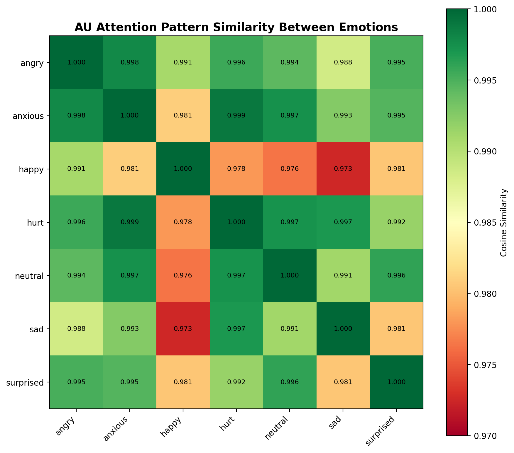
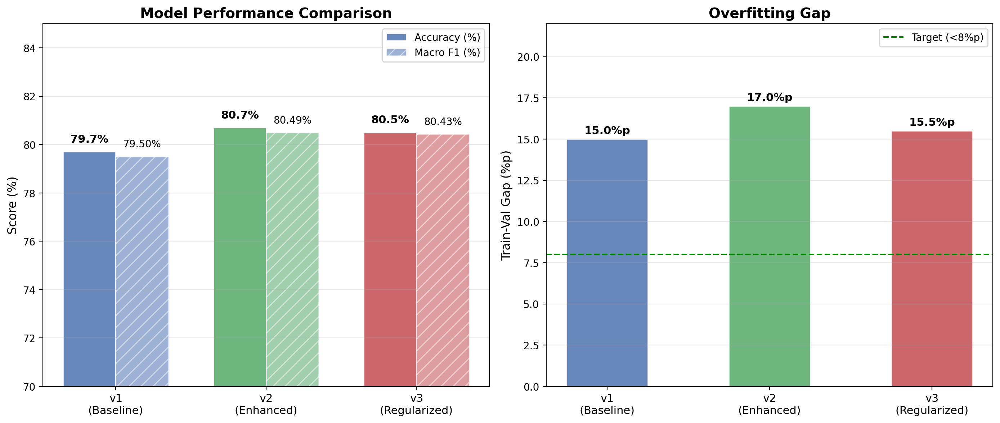
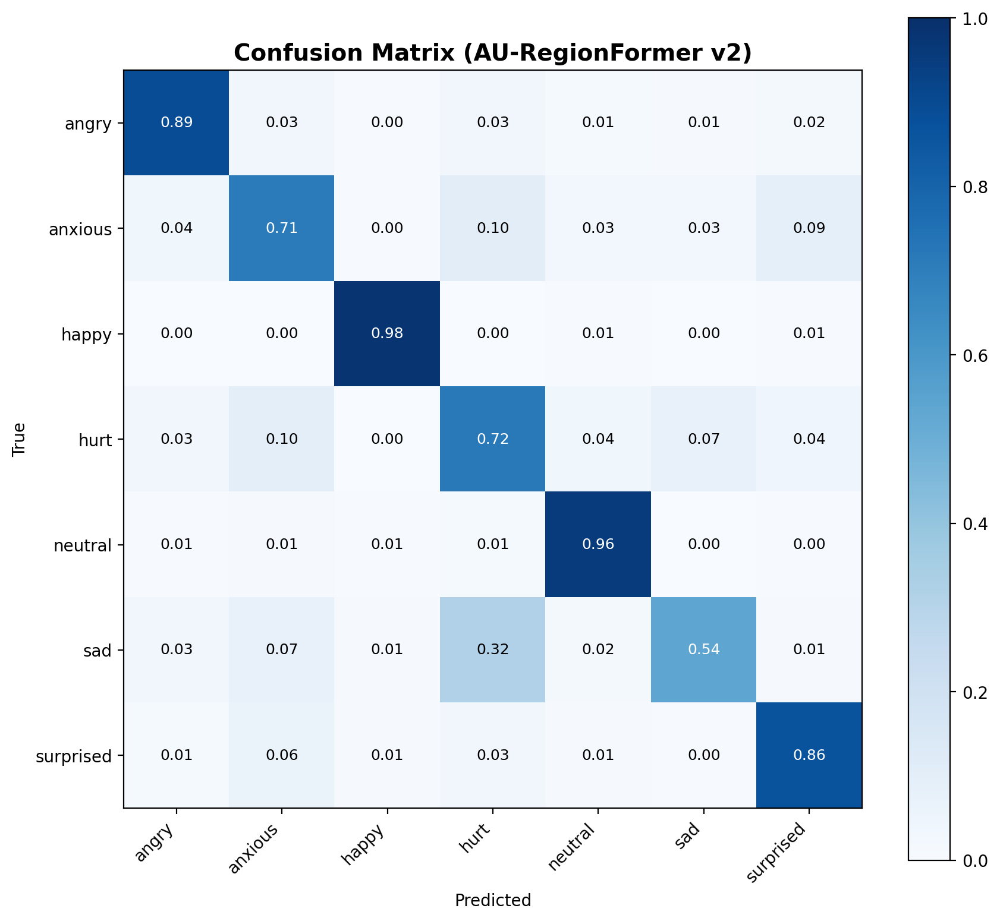
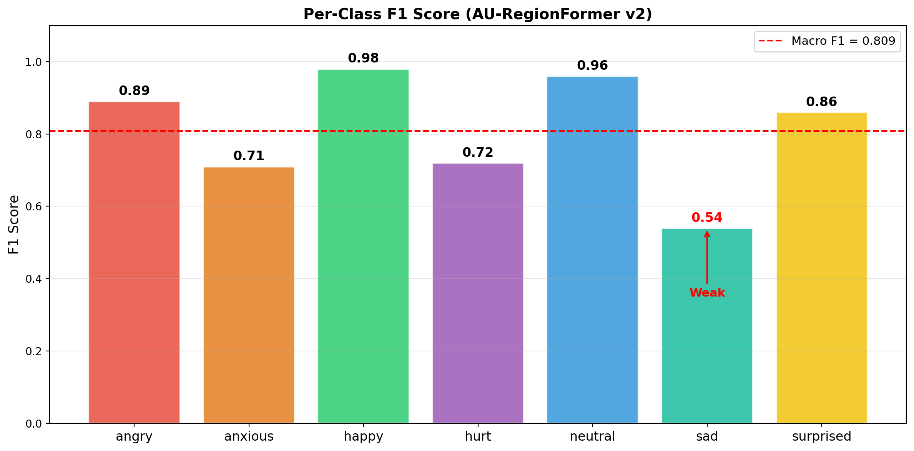

연구 진행 보고서
한국인 감정 표현의 문화적 구조 분석
및 Graph 기반 모델링 방향
2026. 04. | 안준영
1. 연구 요약
연구 주제
- 한국인 감정 표현에 존재하는 문화적 구조를 정량 분석
- 이를 반영한 FER(Facial Expression Recognition) 모델링 방향 수립
핵심 발견
- 감정 간 AU embedding cosine similarity 0.97-0.99 — feature로 감정 구분 불가
- 혼동이 일방향 (슬픔→상처 11.9%, 역방향 0%) — 문화적 규칙 존재
- 7감정→4감정 축소 시 80.7%→89.2% — 특정 감정이 bottleneck
- 5개 독립 신호 전부 동일 순서 (p<10⁻³⁷) — 재현 가능한 객관적 패턴
- 성별/나이에 따라 체계적 차이 (남성+5.3%p, 20대 vs 60대 18.9%p)
결론: CNN/ViT feature 기반 학습의 한계 확인 → 감정 간 "관계"를 학습하는 Graph 기반 접근 필요
2. 분석 대상 데이터
2.1 AI Hub 원본
- 데이터셋: "한국인 감정인식을 위한 복합 영상"
- 피험자: 1,100명 (배우 48%, 일반인 52%)
- 감정: 7종 (기쁨, 분노, 슬픔, 중립, 당황, 불안, 상처)
- 라벨링: annotator 3명 독립 판정
- 학습용: 413,122장 (얼굴 crop), val 51,805장
- AU 영역: 8개 (forehead, eyes×2, nose, cheek×2, mouth, chin)
2.2 연세대 외부 검증
- 참여자: 298명 (연세대 심리학과)
- 과제: 10장 중 "해당 감정 아닌 것" 모두 고르기 (15초 제한)
- 대상: 기쁨, 분노, 슬픔, 중립 (4감정)
- 규모: 247,490 응답, 242,600장
- 핵심: is_selected=1 = "이 감정 아니다" (앱 소스코드 확인)
- 결과: 기쁨/중립 미제거, 분노 7.6% 제거, 슬픔 8.1% 제거
신뢰도 검증
- 2인 교차 평가 (4,720장): 일치율 98.7%
- 원본 annotator와 교차: chi²=424, p<10⁻⁹⁴

[그림 1] annotator 일치율 + 연세대 rejection rate

[그림 2] 2인 교차 일치율 98.7%
3. 분석 결과
3.1 Feature space — 감정 간 구분 불가
방법
- AU-RegionFormer 추출 embedding의 감정 간 cosine similarity 계산
- kNN (k=50) 불일치율 측정
결과
| 감정 쌍 | Cosine Similarity |
|---|
| anxious - hurt | 0.999 |
| sad - hurt | 0.997 |
| angry - anxious | 0.998 |
| happy - sad | 0.973 (최대 차이) |
| 감정 | kNN 불일치율 | 의미 |
|---|
| happy | 0.155 | 이웃 85%가 같은 감정 |
| angry | 0.317 | 이웃 1/3이 다른 감정 |
| hurt | 0.522 | 이웃 절반이 다른 감정 |
| anxious | 0.543 | 이웃 절반 이상 다른 감정 |
해석
- 모든 감정 쌍 similarity 0.97+ — CNN feature로 구분 불가
- anxious/hurt는 feature space에서 완전 혼재
feature 수준에서 감정이 분리되지 않는다 — CNN/ViT의 구조적 한계

[그림 3] 감정 간 AU cosine similarity
3.2 모델 개선 — 80% 벽
방법
- backbone 확장, fusion 추가, EMA, distillation, DropPath 적용
결과
| 버전 | 변경 | F1 | Acc |
|---|
| v1 | MobileViTv2-100, 1 fusion | 0.795 | 79.7% |
| v2 | MobileViTv2-150, 2 fusion | 0.805 | 80.7% |
| v3 | +EMA, distill, DropPath | 0.807 | 80.8% |
해석
- v1→v3 +1.2%p가 최대 — 모델이 아닌 다른 원인

[그림 4] 버전별 성능
3.3 라벨 일치도 — annotator 48-51%
방법
- 원본 JSON annotator 3인 판정 교차 분석
결과
| 감정 | 3인 완전 일치 | uploader와 불일치 |
|---|
| 기쁨 | 96.2% | 8.0% |
| 중립 | 73.6% | 27.0% |
| 분노 | 51.1% | 51.1% |
| 슬픔 | 47.7% | 55.1% |
해석
- 슬픔/분노: 전문가 3명 중 절반만 동의
- 모델 80%는 이미 annotator 합의 수준 초과
- 라벨 모호성은 noise가 아닌 감정 구조 반영

[그림 5] 표현 감정 vs annotator 판정
3.4 혼동 흐름 — 일방향 구조
방법
- annotator가 uploader와 다르게 판정한 방향 분석
결과
| 방향 | 건수 | 비율 | 역방향 |
|---|
| 슬픔 → 상처 | 21,327 | 11.9% | 0% |
| 분노 → 불안 | 15,763 | 8.8% | 0% |
| 슬픔 → 불안 | 13,900 | 7.7% | 0% |
| 기쁨 ↔ 중립 | 2,807 | 1.6% | 1.6% |
해석
- "강한 감정 → 약한 감정" 일방향 — 역방향 0%
- 무작위 noise가 아닌 문화적 규칙
한국인은 강한 부정 감정을 절제하여 표현 → 약한 감정으로 읽힘

[그림 6] 비대칭 혼동 흐름

[그림 7] annotator 불일치 상위 흐름
3.5 감정 축소 — 89.2%
실험 근거
- 3.1: anxious/hurt kNN 불일치 0.52-0.54
- 3.4: 슬픔→상처 21,327건, 분노→불안 15,763건
- 이 감정들이 전체 성능을 끌어내리는지 확인
결과
| 실험 | 감정 수 | F1 | Acc |
|---|
| v2 (전체) | 7 | 0.805 | 80.7% |
| 4emo (축소) | 4 | 0.889 | 89.2% |
해석
- +8.5%p — anxious/hurt/surprised가 전체 성능의 직접적 bottleneck
3.6 외부 검증 — 298명, 98.7%
실험 근거
- 3.3~3.5가 annotator 3명만의 특이사항인지 배제 필요
결과
| 검증 | 수치 |
|---|
| 2인 교차 일치율 | 98.7% |
| annotator × 연세대 | chi²=424, p<10⁻⁹⁴ |
| 3중 교차 (최고 vs 최저) | 8.7% vs 21.5% (2.5배) |
| 5개 독립 신호 | 전부 동일 순서 |
해석
- 서로 다른 방법 5개가 전부 같은 결론 — 우연 아닌 객관적 패턴

[그림 8] 5개 신호 일관성

[그림 9] 3중 교차검증
3.7 인구통계 — 체계적 차이
실험 근거
- 문화적 경향이면 성별/나이에 따라 체계적 변화 예상
결과
| 변수 | 수치 | 검정 |
|---|
| 남성 분노 | 73.2% vs 여성 67.9% (+5.3%p) | chi²=169, p<10⁻³⁷ |
| 20대 슬픔 | 67.0% | |
| 60대 슬픔 | 85.9% (차이 18.9%p) | |
| 일반인 분노 | 73.0% vs 배우 67.3% | chi²=215, p<10⁻⁴⁹ |
해석
- 여성 부정감정 표현 더 억제 — 사회적 규범
- 젊은 세대일수록 모호 — 세대 간 변화
- 배우 연기보다 일반인 자연 표현이 더 정확

[그림 10] 성별 비교

[그림 11] 나이대별

[그림 12] 배우 vs 일반인
3.8 물리적 특징 — Landmark 237K
방법
- MediaPipe 468 landmark → 17개 수치 (237,350장 전수)
- "확실한 감정" vs "아닌 것" 비교 (t검정, Cohen's d)
결과
| 감정 | 핵심 특징 | Cohen's d |
|---|
| 기쁨 | 입꼬리 올라감 | d=0.79 (large) |
| 분노 | 입 벌림 + 눈썹 찡그림 | d=0.48 (medium) |
| 슬픔 | 눈 감김 | d=0.43 (medium) |
| 중립 | 입 다물기 | d=0.27 (small) |
- LDA 분류 (landmark만): 79.2% — 모델(80.7%)과 거의 동일
해석
- 물리적 차이 존재하나, landmark 차이 = 모델의 ceiling
3.9 라벨 정제 — 실패
방법
- annotator 분포 → soft label, quality score → sample weight, KL loss
결과
| 실험 | 방법 | F1 |
|---|
| v3 | hard label | 0.807 |
| v5 | soft label + KL | 0.538 (실패) |
해석
- feature 동일(sim 0.97) 상태에서 라벨만 바꿔서는 해결 불가
- 구조적 접근 필요
4. 종합
| # | 발견 | 핵심 수치 |
|---|
| 1 | feature로 감정 구분 불가 | cosine sim 0.97-0.99 |
| 2 | 모델 바꿔도 동일 | v1→v3: +1.2%p |
| 3 | 라벨 자체가 모호 | annotator 47.7-51.1% |
| 4 | 혼동은 일방향 | 11.9% vs 0% |
| 5 | 혼동 감정 제거 시 상승 | 80.7%→89.2% |
| 6 | 외부 검증 일치 | 98.7%, p<10⁻⁹⁴ |
| 7 | 인구통계 체계적 | p<10⁻³⁷ |
| 8 | 물리적 차이 = ceiling | LDA 79.2% ≈ 모델 80.7% |
| 9 | 라벨 정제 불가 | soft label F1=0.538 |
feature separability ❌ + relational structure ⭕
→ Graph 기반 관계 학습이 필요

[그림 13] Confusion Matrix

[그림 14] 감정별 F1
5. 향후 방향
5.1 왜 Graph인가
- AU cosine sim 0.97-0.99 → Euclidean space에서 분리 불가
- 그러나 AU 간 co-activation 관계는 감정별로 다름
- 혼동의 방향성(directed graph)이 문화적 구조 반영
- → feature가 아닌 relational structure로 구분
관련 선행 (2024-2026)
- Adaptive Graph Convolution for AU AAAI 2025
- Causal AU Relationship Discovery NeurIPS 2024
- EmotiGraph: Heterogeneous Graph CVPR 2024
- Emotion-Topology-Aware Smoothing NeurIPS 2024
5.2 적용 가능 구조
| 구조 | 적용 | 기대 |
|---|
| GNN / GAT | AU 관계 graph 학습 | feature 한계 돌파 |
| MoE | 인구통계 subgroup별 expert | 자동 보정 |
| Multimodal Graph | face + audio + bio 노드 | 표정 한계 보완 |
| VLM / CLIP | 한국 문화 prompting | context 주입 |
| Evidential | 모호 vs 무지 분리 | uncertainty 정량화 |
5.3 선행 연구 Gap (0편)
- 한국인 AU relationship graph 학습
- Confusion flow를 directed graph edge로
- Annotator disagreement + Graph 결합
- Culture-specific AU Shapley
- Bio signal as graph context node
5.4 논문 타겟
| 타겟 | IF / Rank | 이유 |
|---|
| IEEE TAFFC | IF~11, Q1 | 감정 전문 + 문화 분석 |
| ACM MM | Top-tier | 멀티모달 + 그래프 |
| AAAI | Top-tier | 방법론 novelty |
| Pattern Recognition | IF~8, Q1 | 실험 중심 |